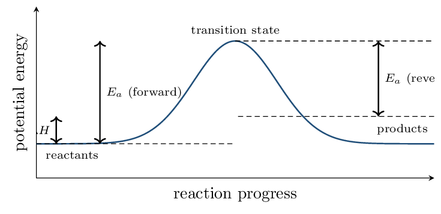
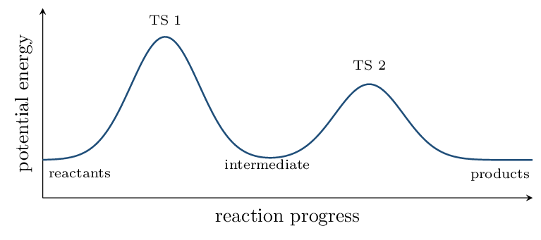
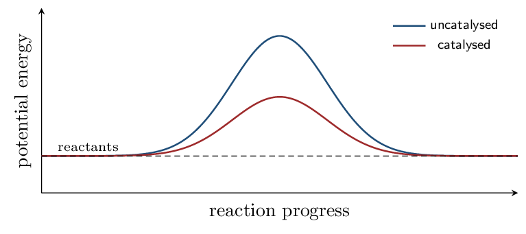

Thermodynamics (Unit 9) will tell you whether a reaction is favored. Equilibrium (Unit 7) will tell you how far it goes. Neither says anything about how fast.
Rate is a separate question with a separate answer, and the answer is always experimental. You cannot read a rate law off a balanced equation. Zumdahl's own example: \(\ce{2N2O5 -> 4NO2 + O2}\) has a coefficient of 2 and is first order in \(\ce{N2O5}\).
The single exception is an elementary step — one actual molecular event — where the molecularity does give the order. Recognizing which case you are in is the skill this unit is really testing.
Reaction Rates CED 5.1 • Zumdahl §12.1
- Express a rate in terms of any species in the equation.
- Distinguish average, instantaneous, and initial rate.
Read: Zumdahl §12.1 • PDF pp. 594–598
- Units of concentration: mol/L (M)
- Slope of a graph is: rise over run
- In \(\ce{2A -> B}\), A is consumed how fast relative to B? twice as fast
- Rate must always be a positive quantity.
INSTRUCTION A • Defining a rate 25 min
Rate is a change per unit time CED 5.1
SP 4 Reaction rate is the change in concentration of a species per unit time. Because reactants disappear, a minus sign is used to keep the rate positive: \[ \text{rate} = -\frac{\Delta[\text{reactant}]}{\Delta t} = +\frac{\Delta[\text{product}]}{\Delta t} \]For \(\ce{2N2O5(g) -> 4NO2(g) + O2(g)}\), oxygen is forming at 2.0e-3 M/s. Find the rate of the reaction and the rate of disappearance of \(\ce{N2O5}\).
Oxygen has coefficient 1, so the reaction rate is \(2.0e-3\,\mathrm{M/s}\).
\(\ce{N2O5}\) has coefficient 2, so it disappears twice as fast: \[ -\frac{\Delta[\ce{N2O5}]}{\Delta t} = 2(2.0\times10^{-3}) = \mathbf{4.0\times10^{-3}}~\mathrm{M/s} \] and \(\ce{NO2}\) appears four times as fast, \(8.0e-3\,\mathrm{M/s}\).GUIDED PRACTICE • Three kinds of rate 15 min
A plot of \([\text{reactant}]\) against time is a curve that starts steep and flattens.
- Average rate over an interval is the slope of the straight line between two points.
- Instantaneous rate at one moment is the slope of the tangent there.
- Initial rate is the instantaneous rate at \(t = 0\).
- Why does the curve flatten?
- Why do rate-law experiments use the initial rate?
APPLICATION • Rate conversions 20 min
- For \(\ce{N2 + 3H2 -> 2NH3}\), \(\ce{H2}\) is consumed at
0.030 M/s. Find the rate of the reaction and the
rate of formation of \(\ce{NH3}\).
rate \(= (1/3)(0.030) = \mathbf{0.010}~\mathrm{M/s}\); \(\ce{NH3}\) forms at \(2(0.010) = \mathbf{0.020}~\mathrm{M/s}\)
- A student reports “the rate is 0.030 M/s” after watching \(\ce{H2}\). What is missing from that statement?
Rate Laws and Orders CED 5.2 • Zumdahl §12.2–12.3
- Write a rate law and identify reaction orders.
- Determine orders and \(k\) from initial-rate data.
Read: Zumdahl §12.2–12.3 • PDF pp. 598–604
- Rate for \(\ce{2A -> B}\) in terms of A: \(-\tfrac{1}{2}\Delta[\ce{A}]/\Delta t\)
- Initial rate is measured at: \(t = 0\)
- Orders come from: experiment
INSTRUCTION A • The form of a rate law 25 min
Rate law, orders, and the rate constant CED 5.2
SP 5 \[ \text{rate} = k[\ce{A}]^m[\ce{B}]^n \]- \(k\) is the rate constant: constant with concentration, not with temperature.
- \(m\) and \(n\) are the orders — determined experimentally, never from coefficients.
- The overall order is \(m + n\).
A related trap: the units of \(k\) change with the overall order, so they are a free check on your work. First order gives /s; second order /M/s; zero order M/s.
The method of initial rates CED 5.2
Change one concentration at a time and see what the rate does. If doubling \([\ce{A}]\) multiplies the rate by \(2^m\), then \(m\) is the order in A.
| Double [A] and the rate… | order in A | |
|---|---|---|
| does not change | 0 | \(2^0 = 1\) |
| doubles | 1 | \(2^1 = 2\) |
| quadruples | 2 | \(2^2 = 4\) |
| Exp | \([\ce{A}]_0\) | \([\ce{B}]_0\) | initial rate (M/s) |
|---|---|---|---|
| 1 | 0.10 | 0.10 | \(2.0\times10^{-3}\) |
| 2 | 0.20 | 0.10 | \(8.0\times10^{-3}\) |
| 3 | 0.10 | 0.20 | \(4.0\times10^{-3}\) |
GUIDED PRACTICE • A second data set 15 min
| Exp | \([\ce{X}]_0\) | \([\ce{Y}]_0\) | rate (M/s) |
|---|---|---|---|
| 1 | 0.20 | 0.10 | \(1.5\times10^{-2}\) |
| 2 | 0.40 | 0.10 | \(3.0\times10^{-2}\) |
| 3 | 0.20 | 0.20 | \(1.5\times10^{-2}\) |
- Order in X: 1
- Order in Y: 0
- Rate law: rate \(= k[\ce{X}]\)
- \(k = \) 0.075 /s
- What does zero order in Y mean physically?
APPLICATION • Using a rate law 20 min
- For rate \(= k[\ce{A}]^2[\ce{B}]\) with
\(k = 2.0\,\mathrm{/M^2/s}\), find the rate when
\([\ce{A}] = 0.30\) and \([\ce{B}] = 0.20\).
\((2.0)(0.30)^2(0.20) = (2.0)(0.090)(0.20) = \mathbf{0.036}~\mathrm{M/s}\)
- In that same reaction, what happens to the rate if \([\ce{A}]\) is tripled and \([\ce{B}]\) halved?
- A student writes rate \(= k[\ce{A}]^2[\ce{B}]\) for \(\ce{2A + B -> C}\) “because of the coefficients.” Explain why the reasoning is wrong even though the answer happens to match.
Concentration Over Time CED 5.3 • Zumdahl §12.4
- Identify order from which plot is linear.
- Apply integrated rate laws and half-life.
Read: Zumdahl §12.4 • PDF pp. 604–615
- A rate law gives rate in terms of: concentration
- Order in Y is 0 means the rate: does not depend on Y
- Units of \(k\) for first order: /s
INSTRUCTION A • Three orders, three straight lines 25 min
Integrated rate laws CED 5.3
SP 5A rate law tells you the rate now; the integrated form tells you the concentration at time \(t\). Each order gives a different straight-line plot, and that is how order is identified from data.
| Order | Integrated law | Linear plot | Half-life |
|---|---|---|---|
| 0 | \([\ce{A}] = -kt + [\ce{A}]_0\) | \([\ce{A}]\) vs \(t\) | \(t_{1/2} = [\ce{A}]_0/2k\) |
| 1 | \(\ln[\ce{A}] = -kt + \ln[\ce{A}]_0\) | \(\ln[\ce{A}]\) vs \(t\) | \(t_{1/2} = 0.693/k\) |
| 2 | \(1/[\ce{A}] = kt + 1/[\ce{A}]_0\) | \(1/[\ce{A}]\) vs \(t\) | \(t_{1/2} = 1/(k[\ce{A}]_0)\) |
In every case the slope is \(\pm k\) — negative for zero and first order, positive for second order.
GUIDED PRACTICE • Second and zero order 15 min
- Second order, \(k = 0.15\,\mathrm{/M/s}\),
\([\ce{A}]_0 = 0.20\,\mathrm{M}\). Find \([\ce{A}]\) after
100 s.
\(1/[\ce{A}] = (0.15)(100) + 1/0.20 = 15 + 5.0 = 20\); \([\ce{A}] = \mathbf{0.050}~\mathrm{M}\)
- Its half-life: 33 s
- Zero order, \(k = 0.020\,\mathrm{M/s}\),
\([\ce{A}]_0 = 1.00\,\mathrm{M}\). Find \(t_{1/2}\) and
\([\ce{A}]\) after 30 s.
\(t_{1/2} = 1.00/(2 \times 0.020) = \mathbf{25}~\mathrm{s}\); \([\ce{A}] = 1.00 - (0.020)(30) = \mathbf{0.40}~\mathrm{M}\)
APPLICATION • Identifying order from data 20 min
- A reaction's half-life is 25.0 min at the start and
25.0 min again after half the reactant is gone. What is
the order, and what is \(k\)?
Constant half-life \(\Rightarrow\) first order. \(k = 0.693/25.0 = \mathbf{0.0277}~\mathrm{/min}\)
- Data for a decomposition give a curved plot of \([\ce{A}]\) vs \(t\), a curved plot of \(\ln[\ce{A}]\) vs \(t\), and a straight plot of \(1/[\ce{A}]\) vs \(t\) with slope \(+0.42\). State the order, \(k\), and the rate law.
- Why is a constant half-life such strong evidence of first order?
Elementary Steps and Mechanisms CED 5.4, 5.7, 5.8 • Zumdahl §12.5
- Write the rate law for an elementary step from its molecularity.
- Test whether a proposed mechanism is acceptable.
Read: Zumdahl §12.5 • PDF pp. 615–620
- Orders normally come from: experiment
- First-order half-life \(=\) \(0.693/k\)
- Second order gives which linear plot? \(1/[\ce{A}]\) vs \(t\)
INSTRUCTION A • The one place coefficients do give orders 25 min
Elementary steps CED 5.4
SP 5A mechanism is the sequence of elementary steps — single molecular events — that add up to the overall reaction.
This is the only exception in the entire unit.
| Molecularity | Step | Rate law |
|---|---|---|
| unimolecular | \(\ce{A -> products}\) | rate \(= k[\ce{A}]\) |
| bimolecular | \(\ce{A + B -> products}\) | rate \(= k[\ce{A}][\ce{B}]\) |
| bimolecular | \(\ce{2A -> products}\) | rate \(= k[\ce{A}]^2\) |
| termolecular | \(\ce{A + B + C -> products}\) | rate \(= k[\ce{A}][\ce{B}][\ce{C}]\) |
Termolecular steps are very rare — three particles colliding simultaneously with the right orientation is improbable.
Two species with special roles CED 5.7
- An intermediate is produced then consumed — it does not appear in the overall equation, and it must never appear in a final rate law.
- A catalyst is consumed then regenerated — it appears in the first step and is returned in a later one.
INSTRUCTION B • Testing a mechanism 20 min
The two requirements CED 5.8
SP 6A proposed mechanism is acceptable only if both hold:
- The steps sum to the overall balanced equation (intermediates cancel).
- Its predicted rate law matches the experimental rate law.
Even then the mechanism is only consistent with the data — never proven. Several mechanisms can predict the same rate law.
Overall: \(\ce{2NO2 + F2 -> 2NO2F}\), experimentally rate \(= k[\ce{NO2}][\ce{F2}]\).
Proposed: \begin{align*} \text{Step 1 (slow):} &\quad \ce{NO2 + F2 -> NO2F + F} \\ \text{Step 2 (fast):} &\quad \ce{NO2 + F -> NO2F} \end{align*}
Do they sum? Adding gives \(\ce{2NO2 + F2 -> 2NO2F}\), with the F atom cancelling. ✓ Predicted rate law? The slow step is rate-determining, and it is elementary, so its rate law is rate \(= k[\ce{NO2}][\ce{F2}]\). ✓ Matches.Note that F is an intermediate — made in step 1, used in step 2 — and correctly does not appear in the rate law.
If your derived rate law contains an intermediate, you are not finished.
APPLICATION • Evaluating mechanisms 20 min
- Overall \(\ce{2NO + O2 -> 2NO2}\) has experimental rate \(= k[\ce{NO}]^2[\ce{O2}]\). Is a single termolecular step a plausible mechanism?
- For the mechanism \(\ce{A2 -> 2A}\) (slow), \(\ce{A + B -> AB}\) (fast), give the overall equation and predicted rate law.
- Identify the intermediate and the catalyst: \(\ce{X + C -> XC}\), then \(\ce{XC + Y -> XY + C}\). XC intermediate; C catalyst
Collision Model and Energy Profiles CED 5.5, 5.6 • Zumdahl §12.6
- Explain rate in terms of collision frequency, energy, and orientation.
- Read and draw a reaction energy profile.
Read: Zumdahl §12.6 • PDF pp. 620–626
- Molecularity gives the order only for: an elementary step
- An intermediate is: produced then consumed
- Raising temperature does what to rate? increases it
INSTRUCTION A • Why most collisions do nothing 25 min
Three requirements for a reactive collision CED 5.5
SP 6- The particles must collide.
- They must collide with at least the activation energy, \(E_a\).
- They must collide with the correct orientation.
Only a tiny fraction of collisions satisfy all three, which is why rates are so much smaller than collision frequencies.
Temperature and the Arrhenius equation CED 5.5
\[ k = Ae^{-E_a/RT} \]Raising the temperature does not mainly work by making collisions more frequent — that effect is small. It works because the distribution of molecular kinetic energies broadens, so a much larger fraction of collisions clears \(E_a\).
A reaction has \(E_a = 50.0\,\mathrm{kJ/mol}\). By what factor does \(k\) change from 300 K to 310 K?
\[ \ln\frac{k_2}{k_1} = -\frac{E_a}{R}\left(\frac{1}{T_2} - \frac{1}{T_1}\right) = -\frac{50000}{8.314}\left(\frac{1}{310} - \frac{1}{300}\right) = 0.647 \] \[ \frac{k_2}{k_1} = e^{0.647} = \mathbf{1.9} \]A 10 K rise nearly doubles the rate — the familiar rule of thumb, and now derived rather than asserted.
With \(E_a = 100\,\mathrm{kJ/mol}\) the same rise multiplies \(k\) by 3.6: the larger the barrier, the more temperature-sensitive the reaction.
INSTRUCTION B • Reading the energy profile 20 min
What the diagram shows CED 5.6
SP 3
- \(E_a\) is measured from the reactants up to the transition state.
- \(\Delta H\) is the difference between products and reactants — independent of the barrier height.
- \(E_a(\text{forward}) - E_a(\text{reverse}) = \) \(\Delta H\).
APPLICATION • Profiles and barriers 20 min
- A reaction has \(E_a(\text{fwd}) = 80\,\mathrm{kJ}\) and \(E_a(\text{rev}) = 120\,\mathrm{kJ}\). Find \(\Delta H\) and classify the reaction. \(-40\) kJ; exothermic
- Another has \(E_a(\text{fwd}) = 150\,\mathrm{kJ}\) and \(\Delta H = +60\,\mathrm{kJ}\). Find \(E_a(\text{rev})\). 90 kJ
- Explain, in terms of the energy distribution, why raising the temperature by 10 K can nearly double a rate when it raises the average kinetic energy by only about 3%.
Fast First Steps and Multistep Profiles CED 5.9, 5.10 • Zumdahl §12.5–12.6
- Derive a rate law when the first step is a fast equilibrium.
- Interpret a multistep energy profile.
Read: Zumdahl §12.5–12.6 • PDF pp. 615–626
- A final rate law must never contain: an intermediate
- \(E_a(\text{fwd}) - E_a(\text{rev}) = \) \(\Delta H\)
- The slow step is called the: rate-determining step
INSTRUCTION A • When the slow step is not first 25 min
The pre-equilibrium approximation CED 5.9
SP 5If the first step is fast and reversible and the second is slow, the first step reaches equilibrium before the second consumes much of the intermediate. Write the rate law for the slow step, then use the equilibrium of step 1 to eliminate the intermediate.
Overall \(\ce{2NO + O2 -> 2NO2}\), experimental rate \(= k[\ce{NO}]^2[\ce{O2}]\).
\begin{align*} \text{Step 1 (fast, equilibrium):} &\quad \ce{2NO <=> N2O2} \\ \text{Step 2 (slow):} &\quad \ce{N2O2 + O2 -> 2NO2} \end{align*} Start with the slow step: rate \(= k_2[\ce{N2O2}][\ce{O2}]\). But \(\ce{N2O2}\) is an intermediate, so this is not yet a valid rate law. Use the equilibrium: for step 1, \(K_1 = \dfrac{[\ce{N2O2}]}{[\ce{NO}]^2}\), so \([\ce{N2O2}] = K_1[\ce{NO}]^2\). Substitute: \[ \text{rate} = k_2K_1[\ce{NO}]^2[\ce{O2}] = k[\ce{NO}]^2[\ce{O2}] \] where the observed \(k\) is the product \(k_2K_1\). This matches experiment, and the intermediate is gone. ✓The observed rate constant is a combination of constants (\(k = k_2K_1\) here), which is why a measured \(k\) need not correspond to any single elementary step. That is also why the same rate law can arise from more than one mechanism.
INSTRUCTION B • Multistep energy profiles 20 min
Reading a two-hump diagram CED 5.10
SP 3Each elementary step contributes one hump. The number of humps equals the number of steps, and the valley between them is the intermediate.

In the diagram above, the first step is rate-determining.
APPLICATION • Putting the pieces together 20 min
- For the mechanism \(\ce{A + B <=> C}\) (fast equilibrium),
\(\ce{C + B -> D}\) (slow), derive the rate law.
Slow step: rate \(= k_2[\ce{C}][\ce{B}]\). From step 1, \(K_1 = [\ce{C}]/([\ce{A}][\ce{B}])\) so \([\ce{C}] = K_1[\ce{A}][\ce{B}]\). Substituting: rate \(= k_2K_1[\ce{A}][\ce{B}]^2 = \mathbf{k[\ce{A}][\ce{B}]^2}\)
- A two-step profile shows a first hump of 95 kJ and a second of 60 kJ above the intermediate. Which step is rate-determining, and what would the rate law depend on?
- Explain why a valid mechanism can have a rate law containing a species that does not appear in the slow step.
Catalysis CED 5.11 • Zumdahl §12.7
- Explain how a catalyst increases rate.
- State precisely what a catalyst does and does not change.
Read: Zumdahl §12.7 • PDF pp. 626–632
- A catalyst is consumed then regenerated
- The rate-determining step is the one with the: highest barrier
- \(k = Ae^{-E_a/RT}\); lowering \(E_a\) does what to \(k\)? increases it
INSTRUCTION A • A different route, not a smaller hill 25 min
How catalysis works CED 5.11
SP 6A catalyst provides an alternative reaction pathway with a lower activation energy. It does not push the reactants over the original barrier — it gives them a different, lower one.

Notice what the two curves share: the same start and the same finish.
| A catalyst changes | \(E_a\), the mechanism, and therefore the rate |
|---|---|
| A catalyst does not change | \(\Delta H\), \(\Delta G^\circ\), \(K\), or the position of equilibrium |
Equally wrong: “a catalyst makes the reaction more thermodynamically favorable.” \(\Delta G^\circ\) is fixed by the reactants and products alone.
GUIDED PRACTICE • Types and identification 15 min
- A homogeneous catalyst is in the same phase as the reactants; a heterogeneous catalyst is in a different phase.
- How do you spot a catalyst in a mechanism? it appears in an early step and reappears later
- How do you spot an intermediate? it is produced first, then consumed
- Enzymes are catalysts that are highly specific to their substrate.
APPLICATION • Catalysis reasoning 20 min
- A catalyst lowers \(E_a\) from 120 kJ/mol to 60 kJ/mol. What happens to \(\Delta H\), to \(K\), and to the time needed to reach equilibrium?
- In the mechanism \(\ce{H2O2 + I- -> H2O + IO-}\), then \(\ce{H2O2 + IO- -> H2O + O2 + I-}\), identify the catalyst and the intermediate, and give the overall equation.
- A student says “the catalyst was used up, so it must have been a reactant.” What observation would settle it?